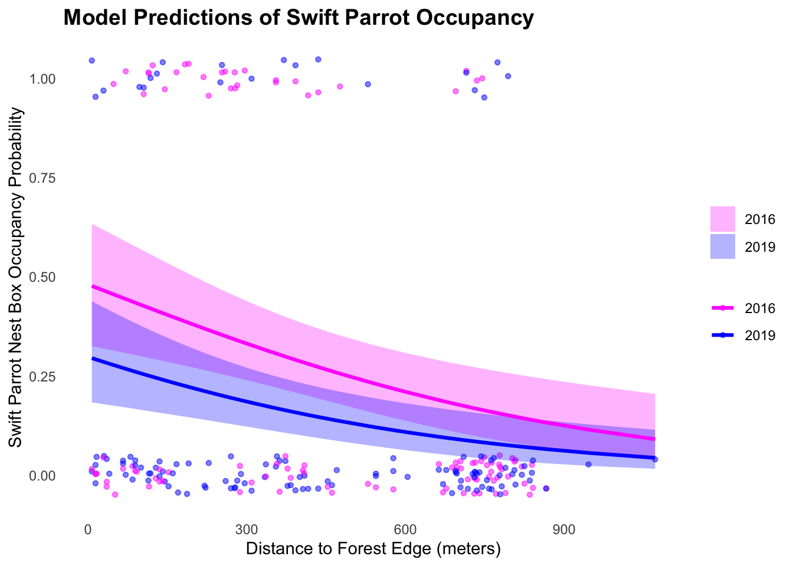

library(tidyverse) # general use
library(here) # file/folder organization
library(ggeffects) # generating model predictions
library(gtsummary) # generating summary tables for models
library(gt)
library(janitor)
library(dplyr)
library(tidyr)
library(scales) # modifying axis labels
library(ggeffects) # getting model predictions
library(DHARMa)
library(MuMIn)ENVS 193DS Final
Set up
1. Research writing
a. Transparent statistical methods
In part 1, they used a Pearson’s correlation test, since the data is parametric, to describe how the two variables relate to each other. In part 2, they used a one-way ANOVA test to compare means across multiple groups.
b. More information needed
One additional test my coworker should run for Part 2 is Tukey’s Honest Significant Difference (HSD) test, which allows for pairwise comparisons between nitrogen sources. This would show which specific sources (e.g., fertilizer vs. grasslands) have significantly different nitrogen loads, rather than just indicating that a difference exists overall.
They should also report descriptive statistics such as the effect size for each source group. These values provide important context about the magnitude differences between the different sources to allow the viewers to understand the variability within each source category.
c. Suggestions for rewriting
We found a [small/moderate/large] relationship between distance from headwater and annual total nitrogen load in the San Joaquin River Delta, suggesting that location along the river may influence nitrogen accumulation. (Pearson correlation: r = [correlation coefficient], p = 0.03, α = [significance level])
We found a statistically significant difference in mean annual nitrogen load among the five nitrogen sources (one-way ANOVA, F = [F-statistic], df = [degrees of freedom], p = 0.02, α = [significance level]). On average, source A had the highest nitrogen load (mean, CI kg year⁻¹), while source B had the lowest. The effect size (η² = effect size) suggests a [small/moderate/large] impact of source type on nitrogen load.
2. Data visualization
#reading in data
sst <- read_csv(here("data", "SST_update2023.csv"))a. Cleaning and summarizing
#cleaning data
sst_clean <- sst |>
clean_names() |> #clean column names
mutate(
year = year(date), #extract year from date in new column
month = month(date, label = TRUE, abbr = TRUE) # extract month in new column as abbreviated motnh name
) |>
# Group by year and month
group_by(year, month) |>
summarise(
mean_monthly_sst = mean(temp, na.rm = TRUE), # calculate mean sea surface temperature per group, ignoring missing values
.groups = "drop") |> # ungroup after summarising to avoid carrying grouping structure forward
mutate(
year = as.factor(year), # convert year to a factor (categorical variable)
month = factor(month, levels = month.abb, ordered = TRUE)) # make month an ordered factor with levels in calendar order (Jan to Dec)# Show 5 random rows
slice_sample(sst_clean, n = 5)# A tibble: 5 × 3
year month mean_monthly_sst
<fct> <ord> <dbl>
1 1996 May 14.2
2 2002 Sep 15.5
3 2001 Dec 13.2
4 2011 Jul 16.6
5 1990 Oct 17.7# Show structure
str(sst_clean)tibble [504 × 3] (S3: tbl_df/tbl/data.frame)
$ year : Factor w/ 42 levels "1982","1983",..: 1 1 1 1 1 1 1 1 1 1 ...
$ month : Ord.factor w/ 12 levels "Jan"<"Feb"<"Mar"<..: 1 2 3 4 5 6 7 8 9 10 ...
$ mean_monthly_sst: num [1:504] 13.1 13.5 13.3 12.9 14.4 ...b. Visualize the data
# Filter to only include 2018–2023
sst_subset <- sst_clean |>
filter(year %in% c("2018", "2019", "2020", "2021", "2022", "2023"))
# Create a color gradient from light to dark
ggplot(sst_subset,
aes(x = month, #month on the x axis
y = mean_monthly_sst, #mean monthly sst on the y axis
group = year, #group lines/points by year
color = year)) + #color lines/points by year
geom_line(size = 1) + # # add lines connecting data points
geom_point(size = 2) + # add points for each observation
# Define custom color scale from light blue to black with 6 shades (one for each year)
scale_color_manual(values = scales::seq_gradient_pal("lightblue", "black", "Lab")
(seq(0, 1, length.out = 6))) +
# Setting up graph labels
labs(
x = "Month",
y = "Mean monthly sea surface temperature (°C)",
color = "Year" #legend title of colors
) +
theme_minimal(base_size = 12) + # use minimal theme with base font size 12
theme(
legend.position = c(0.1, .7), # legend inside the panel
panel.border = element_rect(color = "black", fill = NA), # black panel border
panel.background = element_rect(fill = "white"), # white background
legend.background = element_rect(fill = "white", color = NA), #white background for legend
panel.grid = element_blank() #removing grid lines
)3. Data analysis
#reading in data
nest_boxes <- read_csv(here("data", "occdist.csv")) |>
clean_names() #cleaning column namesa. Response variable
In this dataset, 1s mean that a swift parrot was the species in the nest boxes, while 0s mean that another species was occupying the nest boxes.
b. Purpose of study
Swift parrots are the target species, which are at critically risk of extinction. The other two species, the Common Starlings and Tree Martins, are non-target species that may compete with Swift Parrots for nesting sites.
c. Difference in “seasons”
These two years (2016 and 2019) are referred to as seasons because they represent Swift Parrot breeding years triggered by mast flowering events. They are different because in 2016, nest boxes were newly installed, while in 2019 the same boxes were reused to compare nest box occupancy across time and assess whether permanent nest boxes benefit Swift Parrots or attract non-target species.
d. Table of models
| Model number | Season | Distance to f/e | Description |
|---|---|---|---|
| 0 | No | No | Null model |
| 1 | Yes | Yes | Saturated model |
| 2 | Yes | No | only season as predictor |
| 3 | No | Yes | only distance as predictor |
e. Run the models
## Model fitting
# model 0: null model
model0 <- glm(
sp ~ 1, # formula: no predictors, just the intercept
data = nest_boxes,# data frame
family = "binomial" # binomial distribution for logistic regression
)
# model 1: all predictors (saturated model)
model1 <- glm(
sp ~ season + edge_distance, # formula: season and edge distance as predictors
data = nest_boxes,# data frame
family = "binomial" # binomial distribution for logistic regression
)
# model 2: season only
model2 <- glm(
sp ~ season, # formula: season as predictor
data = nest_boxes,# data frame
family = "binomial" # binomial distribution for logistic regression
)
# model 3: distance only
model3 <- glm(
sp~ edge_distance,# formula: edge distance as predictor
data = nest_boxes,# data frame
family = "binomial" # binomial distribution for logistic regression
)f. Check the diagnostics
## Model diagnostics
# Set up a 2x2 plotting grid
par(mfrow = c(2, 2))
# Plot simulated residuals for each model
plot(simulateResiduals(fittedModel = model0))
plot(simulateResiduals(fittedModel = model1))
plot(simulateResiduals(fittedModel = model2))
plot(simulateResiduals(fittedModel = model3))
g. Select the best model
# Compare all models using AICc
AICc(model0,
model1,
model2,
model3) |>
arrange(AICc) df AICc
model1 3 226.3133
model3 2 229.6716
model2 2 236.3744
model0 1 238.8318#summarize best model
summary(model1)
Call:
glm(formula = sp ~ season + edge_distance, family = "binomial",
data = nest_boxes)
Coefficients:
Estimate Std. Error z value Pr(>|z|)
(Intercept) 5.235e+02 2.280e+02 2.296 0.021665 *
season -2.597e-01 1.130e-01 -2.298 0.021544 *
edge_distance -2.078e-03 6.226e-04 -3.338 0.000843 ***
---
Signif. codes: 0 '***' 0.001 '**' 0.01 '*' 0.05 '.' 0.1 ' ' 1
(Dispersion parameter for binomial family taken to be 1)
Null deviance: 236.81 on 226 degrees of freedom
Residual deviance: 220.21 on 224 degrees of freedom
AIC: 226.21
Number of Fisher Scoring iterations: 4h. Visualize the model predictions
model1_predictions <- ggpredict(
model1, # model object
terms = c("edge_distance [all]", "season") # predictors
) |>
# renaming the columns
rename(edge_distance= x,
season= group)# Set custom colors for each season
season_colors <- c("2016" = "magenta", "2019" = "blue")
# Plot with predictions and raw data
ggplot() +
# Raw data points
geom_jitter(data = nest_boxes, #original data frame
aes(x = edge_distance, #distance from forest edge on x-axis
y = sp, #nest box occupancy (binary) on y-axis
color = factor(season)), # color points by season (as factor)
alpha = 0.5, # make points semi-transparent
width = 0, # no horizontal jitter
height = 0.05, # small vertical jitter to show overlapping points
size = 1.2) + # set point size
# Model predictions with confidence ribbon
geom_ribbon(data = model1_predictions, # use predicted model data
aes(x = edge_distance, # distance from forest edge on x-axis
ymin = conf.low, # lower bound of 95% confidence interval
ymax = conf.high, # upper bound of 95% confidence interval
fill = season), # fill ribbon by season
alpha = 0.3) + # semi-transparent ribbons
# Model prediction lines
geom_line(data = model1_predictions,# use predicted model data
aes(x = edge_distance,# distance from forest edge on x-axis
y = predicted, # y-axis: predicted probability
color = season), # color lines by season
size = 1.1) + # line thickness
# Customize colors
scale_color_manual(values = season_colors) + # apply custom colors to points/lines
scale_fill_manual(values = season_colors) + # apply custom colors to ribbon
# Axis plot and labels
labs(
x = "Distance to Forest Edge (meters)",
y = "Swift Parrot Nest Box Occupancy Probability",
title = "Model Predictions of Swift Parrot Occupancy"
) +
# Use a clean minimal theme
theme_minimal() +
theme(
panel.grid = element_blank(), # remove gridlines
plot.title = element_text(face = "bold", size = 14), #style plot title
legend.title = element_blank() #remove legend title
) 
i. Write a caption for your figure
j. Calculate model predictions
mod_preds <- ggpredict(
model1,
terms = c("edge_distance [0:900]", "season") # edge_distance from 0 to 900, for each season
)
mod_preds# Predicted probabilities of sp
season: 2016
edge_distance | Predicted | 95% CI
--------------------------------------
0 | 0.48 | 0.33, 0.64
150 | 0.40 | 0.29, 0.53
300 | 0.33 | 0.24, 0.44
450 | 0.27 | 0.19, 0.36
600 | 0.21 | 0.14, 0.31
900 | 0.12 | 0.06, 0.24
season: 2019
edge_distance | Predicted | 95% CI
--------------------------------------
0 | 0.30 | 0.18, 0.44
150 | 0.24 | 0.15, 0.35
300 | 0.19 | 0.12, 0.27
450 | 0.14 | 0.09, 0.22
600 | 0.11 | 0.06, 0.18
900 | 0.06 | 0.03, 0.13k. Interpret your results
The predicted probability of occupancy at the forest edge (0 m) is 0.48 in 2016 and 0.30 in 2019. Farther from the forest edge (900 m), the predicted probabilities drop to 0.12 in 2016 and 0.06 in 2019. This pattern shows that as distance from the forest edge increases, the probability of Swift Parrot occupancy decreases. Biologically, this can be explained by increased presence of Tree Martins closer to the forest edge, suggesting there may be competition between the two species for nest boxes. These findings are supported by the visualized model predictions in part h and the specific probability estimates calculated above (part j).
4. Affective and exploratory visualizations
a. Comparing visualizations
The exploratory visualization I created in Homework 2 was a much more artistically-based piece. It was a symbolic drawing of a person melting into their phone screen while in class, meant to represent how distracting phones can be even in educational settings. To make it more representative of the data, in Homework 3, I transformed it into a graph of my class schedule, with bars showing my mean screen time for each day of the week.
A similarity that I see is that they are all on the creative side, something that I feel proud of. However, one is more artistic while the other is more data driven.
My results didn’t show a strong relationship between my two main variables, screen time and minutes in class. In my data visualization, Homework 3 made this lack of relationship more clearly visible, as I had a lot more data compared to Homework 2. The affective and exploratory visualizations were very different in how they illustrated the data.
In week 9, I received feedback from my peers suggesting I decrease the number of bar columns in my graph to just one mean value per day. I implemented this and thought it improved the visualization, making the relationship between days and class time much clearer. I also got feedback to turn my visualization into a digital format, which I was already planning to do, so that aligned with my own goals.
b. Sharing your affective visualization
Attended section!